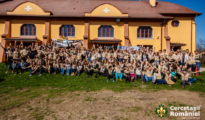

Tradiții de primăvară: eXplorarea

În 3 din ultimii 4 ani, Cabana Scout a avut ieșiri de primăvară la mare. După Năvodari și Jurilovca, anul acesta am mers mai spre nord… Teo și Dițu sunt cei care au ținut jurnalul acestei ieșiri și iată cum au rezumat cele 3 zile ale expediției noastre:
Între 5 și 7 mai am avut o expediție la Tulcea.
Am plecat la ora 9 din București, cu nerăbdare și pregătiți să descoperim lucruri noi. Am încercat să convingem un nou temerar, Tudor, că se va bucura în hike, dar efortul nostru a fost în zadar.
Pe drum am jucat “Fazan”, “EU” și alte jocuri amuzante. Peștera “La Adam” a fost foarte frumoasă. Mă bucur că am văzut-o! (La examenul de Evaluare Națională, am avut un subiect legat de această peșteră. Mi-a prins bine!)
În a doua zi, am avut un hike pe Muntele Măcin. Pe drum, ghidul ne-a dat informații despre flora și fauna din împrejurimi. Seara, noi, temerarii, am jucat o scenetă despre importanța liderilor. Noi am făcut o poezie și am prezentat informațiile pe care le-am preluat de la ghid.
În ultima zi, dimineață, după ce ne-am făcut bagajele și am participat la liturghia de la parohia catolică la care am fost cazați, am plecat pe plaja Vadu. A fost înnorat, dar acest lucru nu i-a oprit pe câțiva cercetași să intre în apă. Pe drumul de întoarcere, dubița a rămas fără baterie. În timp ce așteptam să vină niște oameni cu o baterie bună, noi am jucat Warewolfs.
Acest hike a fost o experiență frumoasă și mă bucur că am participat.
Teodora Barbu, temerar Cabana Scout
***
Dimineața zilei de 5 mai. Cică trebuie să mă trezesc de dimineață, urmând să plec împreună cu cercetașii în primul meu hike fără zăpadă (era și cazul). Plecarea era programată pentru ora 9, însă din câte îmi aduc aminte am ieșit din București pe la ora 10-11. Unii dintre noi au avut „plăcerea” (nu chiar) de a merge cu „duba”. Restul am mers în mașini normale…
Pe drum am avut câteva opriri, în mașini a fost o atmosferă plăcută, s-au jucat jocuri, au avut loc discuții interesante pe diferite teme; după 30 de minute de mers pe un drum mai puțin prietenos, am ajuns la peștera pe care urma să o vizităm, nu înainte de a mânca. Găsirea peșterii, deși a fost o provocare, nu ne-a încetinit prea mult. Explorarea peșterii a fost o experiență foarte făină pe care cu siguranță nu o voi uita prea curând 😉 .
Seara, am ajuns foarte obosiți la parohia unde urma să fim găzduiți și unde am fost primiți cu brațele deschise. În cele ce au urmat am jucat diferite jocuri, am umflat saltele gonflabile (hehe) iar apoi ne-am culcat (cel puțin unii dintre noi).
În ziua următoare am plecat spre Rezervația Naturală „Munții Măcin”, nu înainte de a vizita un punct turistic și de informare din zonă. Pe munte am fost însoțiți de un ranger, care ne-a explicat foarte multe lucruri interesante despre el și ce presupune a fi un ranger, dar și despre natura ce ne înconjoară.
Peisajul, văzut de pe munte era mirific, parcă inducea o stare de pace și liniște;
Seara se lăsa, așa că a trebuit să pornim spre parohie, unde unii dintre noi au ajutat la pregătirea unui grătar. După masă ne-am retras în camere unde temerarii au susținut un mic moment artistic, urmărit cu atenție de restul cercetașilor. Seara a continuat cu multe jocuri și voie bună.
În dimineața ultimei zile din ieșirea de primăvară am luat parte la o slujbă catolică, un lucru nou pentru mine; apoi am plecat către plaja Vadu, pentru că „ce ieșire de primăvară ar fi fost asta, fără să vedem marea?”. Ajunși pe plajă, unii dintre noi au intrat în apa foarte rece, iar alții s-au mulțumit cu privitul.
Tot o tradiție a ieșirii de primăvară este și împinsul mașinilor înapoi spre casă, pentru că din nefericire „dubița” a decis să nu mai funcționeze. În așteptarea unei noi baterii pentru mașină, am jucat jocuri și ne-am cunoscut mai bine. În jurul orei 12 AM ne-am pus în mișcare, ajungând în București pe la ora 3 AM.
Per total mi s-a părut un hike foarte reușit, specific cercetașilor. <3
eXplorator, Dițu Alexandru